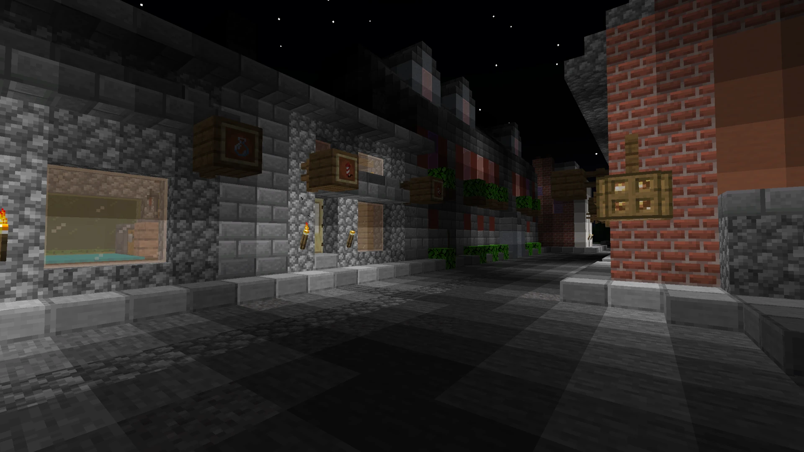
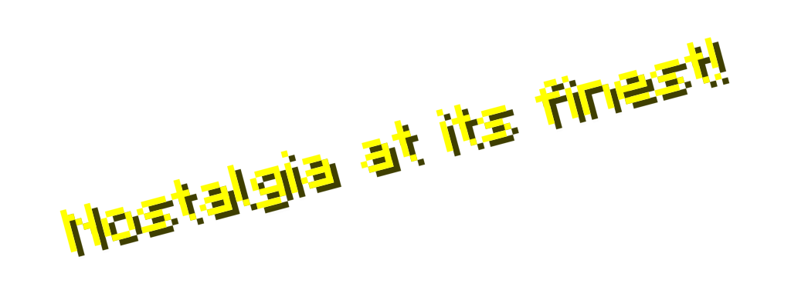
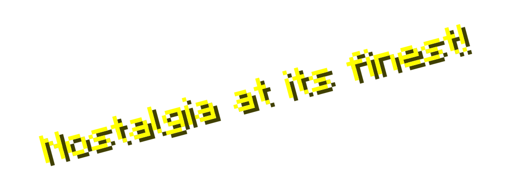

A Minecraft shader that replicates
the visuals of old Minecraft versions,
so you can enjoy modern features AND
the nostalgic look of Minecraft Alpha
v1.1.2_01.

Copyright © Genesis 2025 Reckobot. All Rights Reserved.
Not Associated With Nor Endorsed By Mojang.
 
